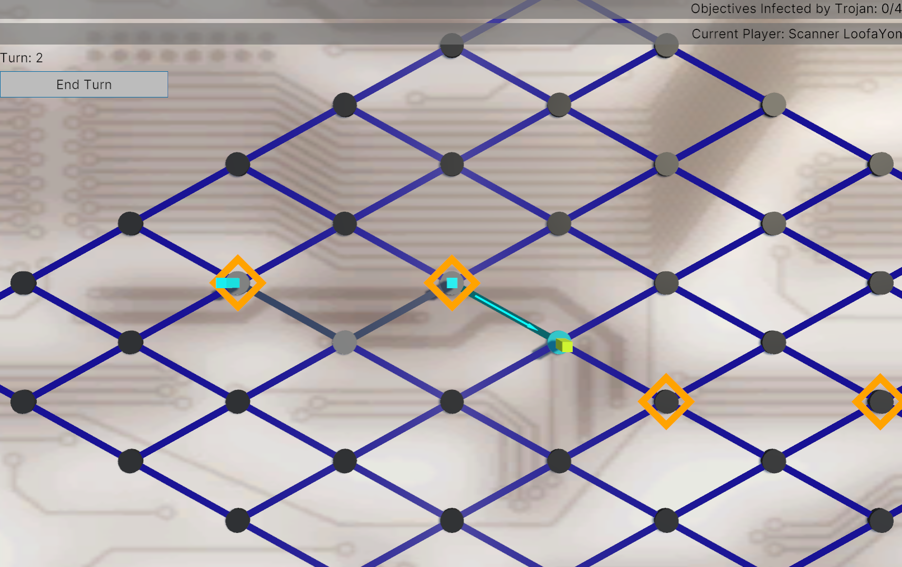

Search and Destroy is a new board game that has hidden movement mechanics. One player takes the role of a Trojan infecting a computer system, while all other players are Scanners trying to scan for the Trojan's position to purge them. It plays similarly to board games such as Scotland Yard, Letters from Whitechapel, or Sniper Elite: The Board Game, but we do not expect your familiarity with any of these commercial titles.

This research aims to examine the elements of AI agents that make them believable, and how they affect player experiences. Specifically, we aim to investigate the differences and similarities between a player's perception of an agent and how they have been originally designed.
You will need a personal computer capable of running an executable file and an internet connection to carry out the research. Please read the below carefully and only proceed if you consent to the research details. Please contact the primary researcher Jooho Lee (j.lee2100@abertay.ac.uk) for further inquiry.
How To Participate
Use this link (hosted on itch.io) to download the game application. The application contains instructions on how to proceed as well as a readme.txt file in the downloaded zip file's root folder which contains further information.
After consenting to the study within the application, you will play 8 rounds of the game. The latter 4 will be followed up by a short questionnaire on how you found the opponents in that game. After all 8 rounds of the game have been played, you will then need to locate the logs folder. This is usually located at %userprofile%\AppData\LocalLow\JLee\SearchAndDestroy\Logs on your computer; See the link at https://docs.unity3d.com/2021.3/Documentation/ScriptReference/Application-persistentDataPath.html for more information. Please compress (zip) the contents of the folder and send it as an attachment via email to the primary researcher Jooho Lee (j.lee2100@abertay.ac.uk).
Participant Information/Consent Form
The entirety of the participant information and consent form is provided below.
Search and Destroy: Implementing Believability Characteristics in Adaptive AI Opponents (EMS9263)
Researcher name(s): Jooho Lee
Consent statement
Abertay University attaches high priority to the ethical conduct of research. Please consider the following carefully before indicating your consent to the details provided. Indicating your consent confirms that you are willing to participate in the research, however, indicating consent does not commit you to anything you do not wish to do and you are free to withdraw your participation at any time. You are indicating consent under the following assumptions:
I understand the contents of the following consent form.
I have been given the opportunity to ask questions about the research and have had them answered satisfactorily.
I understand that my participation is entirely voluntary and that I can withdraw from the research (parts of the project or the entire project) at any time without penalty and without having to provide an explanation.
I understand who has access to my data and how it will be handled at all stages of the research project.
What is the research about?
We invite you to participate in a research project regarding artificial intelligence (AI) players in a multiplayer computer board game. The purpose of our research is to identify the core elements that improve player engagement and enjoyment of interacting with such AI players. The board game in question is an independently produced game named Search and Destroy. We have implemented several AI player settings, including real-time message generation using LLMs and an emotion approximation algorithm. Participants willing to join our study would play the game against different configurations of AI players and then answer a questionnaire provided alongside this application.
Do I have to take part?
This form has been written to help you decide if you would like to take part. It is up to you and you alone whether you wish to take part. If you do decide to take part you will be free to withdraw at any time without providing a reason and without penalty. If you wish to take part, refer to the following instructions. Please note that all data will be collected anonymously. After we fully anonymise your data within a week of receiving it from you, it will become impossible to identify your data and thus cannot be withdrawn afterwards.
What will I be required to do?
You will be asked to play the game via the computer application as provided. Each round of the game should take no more than a few minutes, and you will be asked to play 8 rounds in total. Specific instructions on how to play have been provided in the accompanying readme.txt file, as well as a copy of this statement. The first 4 rounds of the game will not be recorded in any fashion. Afterwards, the in-game actions you perform and the game's outcome will be recorded for the remaining 4 rounds. Following each of these latter 4 rounds, you will also be asked to fill out a brief questionnaire regarding the AI players you have played against. Your responses to these questionnaires will also be recorded.
After all 8 rounds have been played, the application will close. Please locate the folder (mentioned above) and send the contents as an attachment via email to primary researcher Jooho Lee (j.lee2100@abertay.ac.uk).
Rewards/Compensation
There is no reward for participating in this research.
How will you handle my data?
Your data will be stored in an anonymised form and will only be accessible to the researcher Jooho Lee and supervisors Dr. William Kavanagh and Dr. Javad Zarrin (j.lee2100@abertay.ac.uk, w.kavanagh@abertay.ac.uk, j.zarrin@abertay.ac.uk). This means that nobody including the researchers could reasonably identify you within the data. Your data will be stored in the university’s secure shared research drive (RDSS), with data fully anonymised within 7 days (1 week) of collection. Your responses are treated in the strictest confidence - it will be impossible to identify individuals within a dataset when any of the research is disseminated (e.g., in publications/presentations). Abertay University acts as Data Controller (DataProtectionOfficer@abertay.ac.uk).
Retention of research data
Researchers are obliged to retain research data for up to 10 years’ post-publication, however your anonymised research data may be retained indefinitely (e.g., so that researchers engage in open practice and other researchers can access their data to confirm the conclusions of published work). Consistent with our data retention policy, researchers retain consent forms for as long as we continue to hold information about a data subject and for 10 years for published research (including Research Degree thesis).